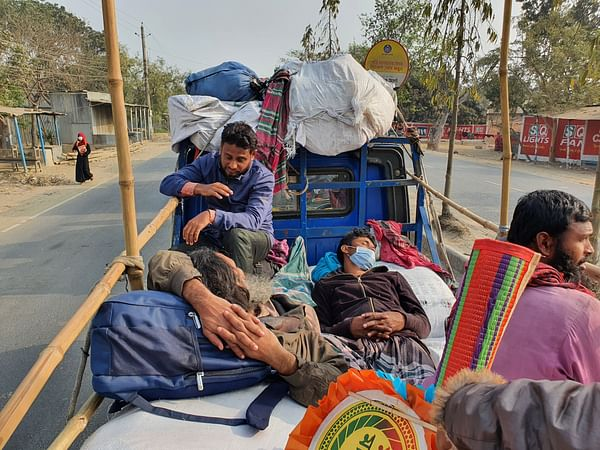
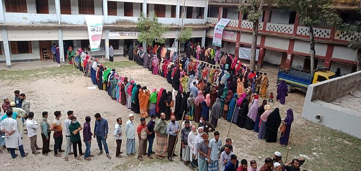

এনআইডি সংশোধন / দেড় লাখ আবেদন ঝুলে আছে
ইসির জাতীয় পরিচয় নিবন্ধন অনুবিভাগ সূত্র জানায়, চলতি বছরের জানুয়ারি পর্যন্ত ১ লাখ ৬৭ হাজার ৭৬৪টি সংশোধনী আবেদন জমা প।

ফাইল ছবি
ডিজিটাল নিরাপত্তা আইন কারও আপত্তিই আমলে নেওয়া হয়নি
২০১৮ সালে আইনটি যখন করা হয়, তখন দেশীয় ও আন্তর্জাতিক বিভিন্ন সংগঠন ও সংস্থা সুনির্দিষ্ট কিছু ধারা নিয়ে উদ্বেগ জানিয়েছিল। সরকার কেবল পুলিশের দাবি মেনে নিয়েছিল।
সুইস সহ বিদেশি ব্যাংকে অর্থ পাচারকারী কারা, জানতে চেয়েছেন হাইকোর্ট
সুইস ব্যাংকসহ দেশের বাইরে বিদেশি ব্যাংকে গোপনে পাচার করে অর্থ রাখা ব্যক্তির নাম–ঠিকানা, অর্থের পরিমাণ এবং ওই অর্থ উদ্ধারে

হাইকোর্ট | ফাইল ছবি
ভোটার তালিকায় নাম কাটা ভারতে যা সিনেমা, লালমনিরহাটে তা বাস্তব
ভারত লাল। বিয়েশাদিতে ব্যান্ড বাজান। ঋণের জন্য গেছেন ব্যাংকে। ব্যাংক জমির দলিল চেয়েছে। ছুটলেন ভূমি অফিসে। গিয়ে তো আক্কেলগুড়ুম! সেখানকার কাগজপত্রে তিনি মৃত। তাঁর জমিজমা সব চাচাতো ভাইদের নামে।
মিয়ানমারে বিক্ষোভকারীদের ওপর গুলি, নিহত ৬
মিয়ানমারে জান্তা শাসকদের বিরুদ্ধে জনরোষ বাড়ছেই। কারাবন্দী অং সান সু চির মুক্তি এবং সেনাশাসনের অবসানের দাবিতে আজ রোববারও দেশটির বিভিন্ন স্থানে রাস্তায় নামেন হাজারো লোক। এ সময় নিরাপত্তা বাহিনীর গুলিতে ...
চীনের সঙ্গে যুক্তরাষ্ট্রের মিলমিশ করতেই হবে
দ্বিতীয় বিশ্বযুদ্ধের পর আমেরিকার পররাষ্ট্রনীতি যে ধারণার ওপর দাঁড়িয়ে আছে, ২০০১ সালের ১১ সেপ্টেম্বর টুইন টাওয়ারে সন্ত্রাসী হামলার পর
ইউনিয়ন পরিষদ নির্বাচনে অংশ নেবে না বিএনপি
আগামী ইউনিয়ন পরিষদ নির্বাচনে অংশগ্রহণ করবে না বলে সিদ্ধান্ত নিয়েছে বিরোধী দল বিএনপি। বর্তমান নির্বাচন কমিশন নিরপেক্ষ ও সুষ্ঠু কোনো নির্বাচনের যোগ্য নয় বলে মন্তব্য করে এ সিদ্ধান্ত নিয়েছে দলটি।
নিউজিল্যান্ডে যেন ‘জেলে’ আছেন মিরাজরা
নিউজিল্যান্ডে পা রেখে সোজা ক্রাইস্টচার্চে নিউজিল্যান্ডের সেনাবাহিনীর তৈরি কোয়ারেন্টিন সেন্টারে ঢুকেছে বাংলাদেশ দল। এর মধ্যে কাটিয়েছে দুদিন। এই দুদিনেই যেন হাঁপিয়ে উঠেছেন ক্রিকেটাররা।।
মেহেদী হাসান মিরাজ ছবি: শামসুল হক
লিগ শিরোপার পথে আবারও রোনালদোদের হোঁচট
টানা দশম লিগ শিরোপা জয় কি তাহলে হবে না জুভেন্টাসের? অন্তত দলের অবস্থা যা, তাতে সেটিই মনে হচ্ছে। লিগ শিরোপা ধরে রাখতে 'খবর' হয়ে যাচ্ছে রোনালদোদের
আবারও হোঁচট খেল জুভেন্টাস ছবি: রয়টার্স

ফেরিস্বল্পতায় দৌলতদিয়ায় পণ্যবাহী গাড়ির লম্বা লাইন
ফেরিস্বল্পতার কারণে রাজবাড়ীর দৌলতদিয়া ও মানিকগঞ্জের পাটুরিয়া নৌপথে যানবাহন পারাপার ব্যাহত হচ্ছে। ফলে, কয়েক দিনের মতো আজ রোববারও দৌলতদিয়া প্রান্তে পণ্যবাহী গাড়ির লম্বা লাইন অব্যাহত রয়েছে। ফেরিঘাট থেকে ঢাকা-খুলনা মহাসড়কের দৌলতদিয়া ইউনিয়ন পরিষদ পর্যন্ত প্রায় তিন কিলোমিটারজুড়ে কয়েক শ ঢাকাগামী গাড়ি রয়েছে।

রায়পুর পৌর নির্বাচনে কেন্দ্রে দেখা নেই বিএনপির এজেন্টদের
শিরোপার স্বপ্ন দেখছেন মেসিরা। ছবি: রয়টার্স
শিরোপার স্বপ্ন দেখা শুরু করেছেন মেসিরা
সেভিয়ার বিপক্ষে ২-০ গোলে পাওয়া জয়টা সাহস বাড়িয়ে দিয়েছে বার্সেলোনার মনে। কিছুদিন আগেও যেখানে মনে হচ্ছিল, এই মৌসুমেও বার্সেলোনা খালি হাতে ফেরত যাবে, এই এক ম্যাচ যেন আশার বাতিটা আরেকটু উজ্জ্বল করে ...
গোলাপি বলের টেস্ট আর খেলতে চায় না ভারত? ফাইল ছবি
দিবারাত্রির টেস্ট আর খেলতে চায় না ভারত?
গোলাপি বলে ভারত টেস্ট খেলেছে তুলনামূলকভাবে অনেক পরে। অস্ট্রেলিয়া যেখানে ২০১৫ সালে প্রথম গোলাপি বলে দিবারাত্রির টেস্ট খেলেছে, সেখানে ভারত খেলেছে ২০১৯ সালের শেষে এসে। গোলাপি বলে দিবারাত্রির টেস্ট নিয়ে প্রথম থেকেই কিছুটা সংশয় ছিল ভারতীয় ক্রিকেটে। এখন ভারতীয় ক্রিকেটাররা নাকি গোলাপি বলে টেস্ট নিয়ে বড় ধরনের আপত্তিই তুলেছেন।